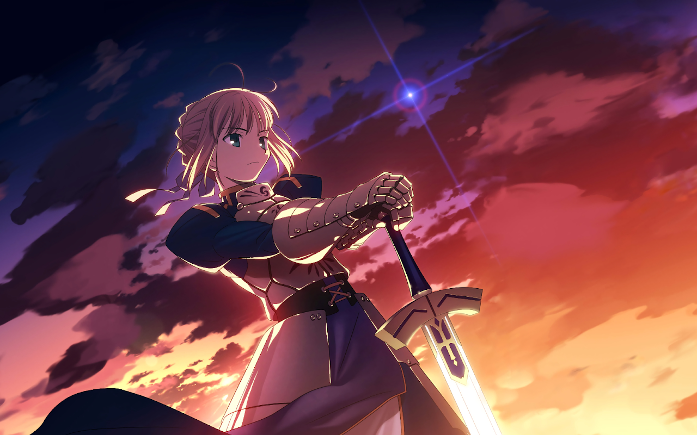
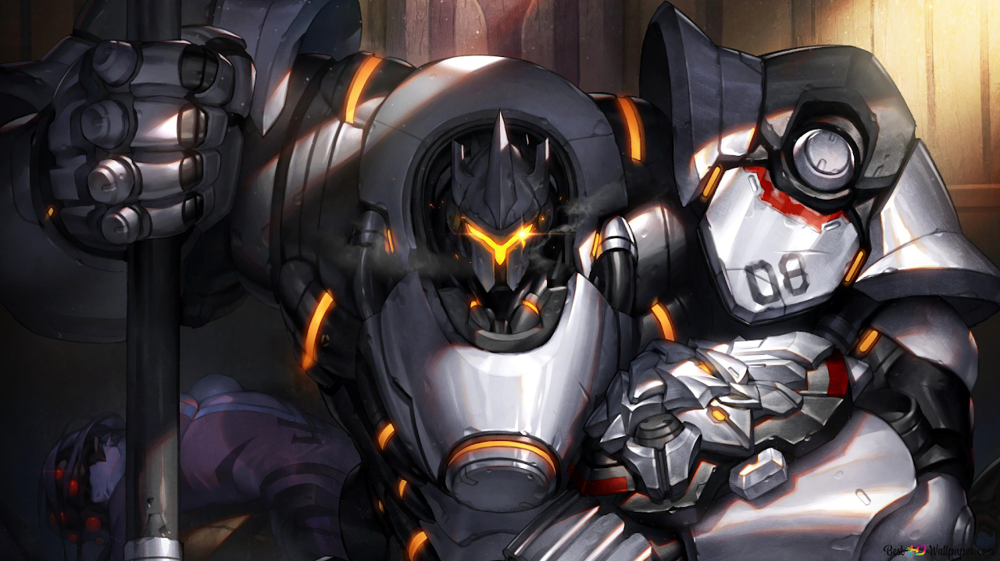
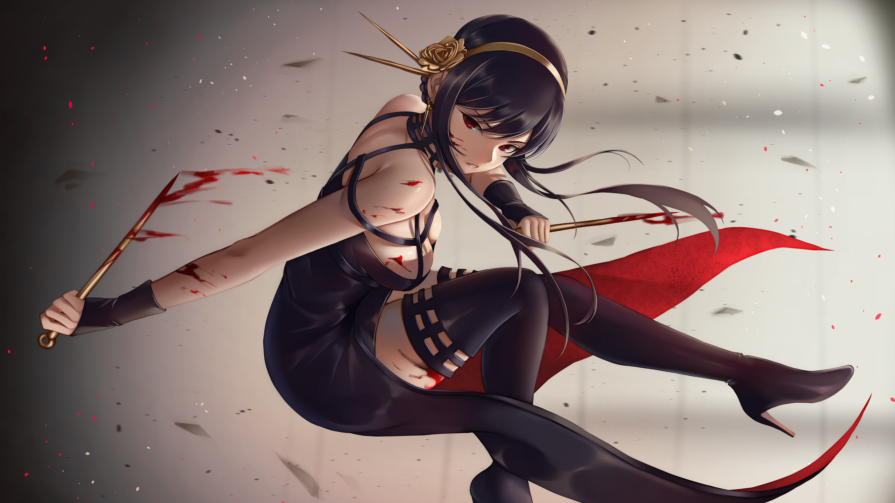
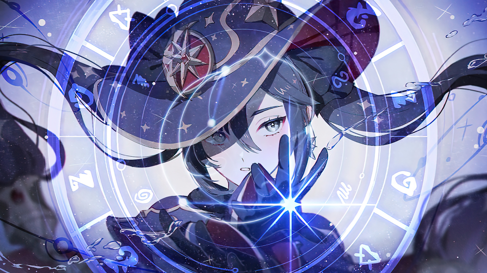
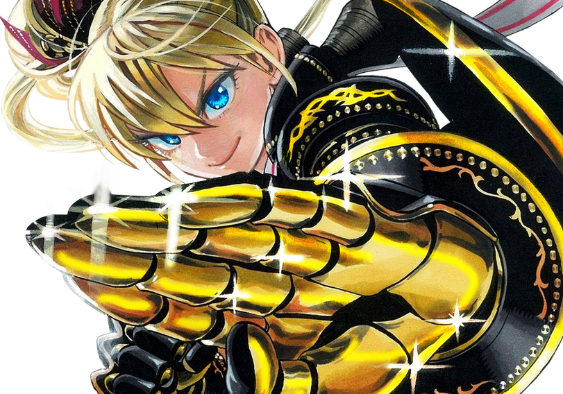
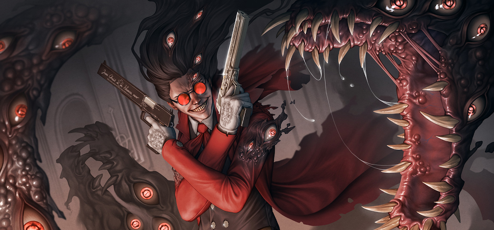
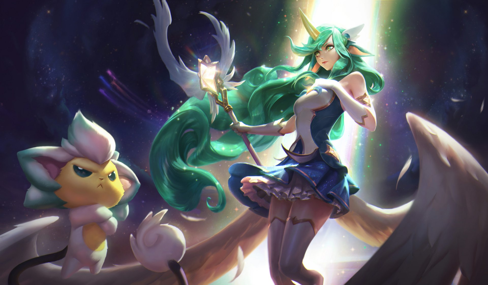
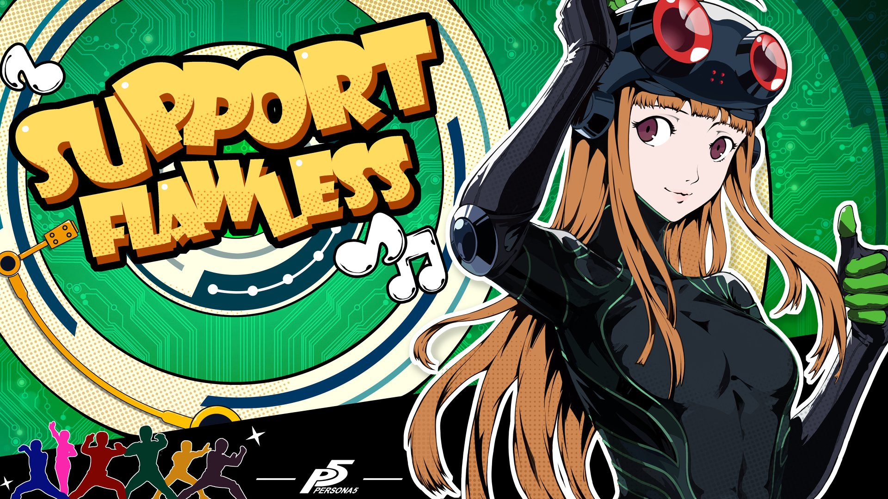

O guerreiro é alguém que atua na linha de frente, tendo a sua disposição uma ampla variedade de armas e
estilos de luta. Em geral, o Guerreiro busca manter o equilíbrio entre seus atributos, não sendo
excepcional
em nenhum deles mas não pecando em nenhum também.

O Tank é aquele que tem o objetivo de aguentar todo o dano para que seus aliados possam agir, sendo
assim,
eles geralmente se tornam uma muralha de músculos e sejam imóveis como uma montanha. Causar dano não é a
prioridade do Tank, mas eles são fortes o bastante para não deixar isso ser um problema, em compensação,
eles não são nem um pouco rápidos.

O Assassino é aquele que vai focar em agilidade e altas quantidades de dano em troca de sua defesa.
Assassinos geralmente usam armas curtas e silenciosas, possibilitando que ele tenha uma grande mobilidade
em
lutas, porém, existem assassinos de todos os tipos.

Enquanto as outras classes lutam com seus musculos, um mago luta com a sua mente. Magos são aqueles que
se
dedicam a masterizar a Energia Honkai e a utilizar da forma mais eficiente possível, seja por meio de
Visões
elementais ou apenas suas próprias técnicas Honkai.

O lutador é aquele que busca ir no mano a mano com seus oponentes, utilizando seus conhecimentos em
combate
para dominar totalmente o adversário com ataques múltiplos e poderosos. Seja em combate desarmado ou com
armas, artes marciais ou o puro instinto da briga, os lutadores sempre sabem tirar o melhor de cada
situação
para vencer os combates.

Atiradores são aqueles que se especializam em combate a distância com os mais variáveis tipos de armas,
eles possuem um reflexo rápido e uma excelente noção de posicionamento, se mantendo na vantagem por poder
atacar enquanto não é atacado.

O Curandeiro se especializa na medicina e usa seus poderes não para ferir, mas para curar aqueles
que necessitam de seus talentos.

O Suporte é aquele que concede todo o apoio necessário ao seu esquadrão, seja por confeccionar
equipamentos, aplicar fortalecimentos na equipe ou montar estratégias.